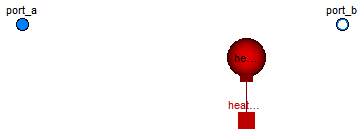

| Name | Description |
|---|---|
| PartialPump | Base model for centrifugal pumps |
| Functions for pump characteristics | |

This is the base model for pumps.
The model describes a centrifugal pump, or a group of nParallel identical pumps. The pump model is based on the theory of kinematic similarity: the pump characteristics are given for nominal operating conditions (rotational speed and fluid density), and then adapted to actual operating condition, according to the similarity equations.
Pump characteristics
The nominal hydraulic characteristic (head vs. volume flow rate) is given by the the replaceable function flowCharacteristic.
The pump energy balance can be specified in two alternative ways:
use_powerCharacteristic = false (default option): the replaceable function efficiencyCharacteristic (efficiency vs. volume flow rate in nominal conditions) is used to determine the efficiency, and then the power consumption.
The default is a constant efficiency of 0.8.use_powerCharacteristic = true: the replaceable function powerCharacteristic (power consumption vs. volume flow rate in nominal conditions) is used to determine the power consumption, and then the efficiency.
Use powerCharacteristic to specify a non-zero power consumption for zero flow rate.
Several functions are provided in the package PumpCharacteristics to specify the characteristics as a function of some operating points at nominal conditions.
Depending on the value of the checkValve parameter, the model either supports reverse flow conditions, or includes a built-in check valve to avoid flow reversal.
It is possible to take into account the mass and energy storage of the fluid inside the pump by specifying its volume V, and by selecting appropriate dynamic mass and energy balance assumptions (see below);
this is recommended to avoid singularities in the computation of the outlet enthalpy in case of zero flow rate.
If zero flow rate conditions are always avoided, this dynamic effect can be neglected by leaving the default value V = 0, thus avoiding fast state variables in the model.
Dynamics options
Steady-state mass and energy balances are assumed per default, neglecting the holdup of fluid in the pump; this configuration works well if the flow rate is always positive.
Dynamic mass and energy balance can be used by setting the corresponding dynamic parameters. This is recommended to avoid singularities at zero or reversing mass flow rate. If the initial conditions imply non-zero mass flow rate, it is possible to use the SteadyStateInitial condition, otherwise it is recommended to use FixedInitial in order to avoid undetermined initial conditions.
Heat transfer
The boolean paramter use_HeatTransfer can be set to true if heat exchanged with the environment
should be taken into account or to model a housing. This might be desirable if a pump with realistic
powerCharacteristic for zero flow operates while a valve prevents fluid flow.
Diagnostics of Cavitation
The boolean parameter show_NPSHa can set true to compute the Net Positive Suction Head available and check for cavitation, provided a two-phase medium model is used.
Extends from Modelica.Fluid.Interfaces.PartialTwoPort (Partial component with two ports), Modelica.Fluid.Interfaces.PartialLumpedVolume (Lumped volume with mass and energy balance).
| Type | Name | Default | Description |
|---|---|---|---|
| replaceable package Medium | PartialMedium | Medium in the component | |
| Volume | fluidVolume | V | Volume [m3] |
| Characteristics | |||
| Integer | nParallel | 1 | Number of pumps in parallel |
| AngularVelocity_rpm | N_nominal | Nominal rotational speed for flow characteristic [1/min] | |
| Density | rho_nominal | Medium.density_pTX(Medium.p_... | Nominal fluid density for characteristic [kg/m3] |
| Boolean | use_powerCharacteristic | false | Use powerCharacteristic (vs. efficiencyCharacteristic) |
| Assumptions | |||
| Boolean | allowFlowReversal | system.allowFlowReversal | = true to allow flow reversal, false restricts to design direction (port_a -> port_b) |
| Boolean | checkValve | false | = true to prevent reverse flow |
| Volume | V | 0 | Volume inside the pump [m3] |
| Dynamics | |||
| Dynamics | energyDynamics | Types.Dynamics.SteadyState | Formulation of energy balance |
| Dynamics | massDynamics | Types.Dynamics.SteadyState | Formulation of mass balance |
| Heat transfer | |||
| Boolean | use_HeatTransfer | false | = true to use a HeatTransfer model, e.g., for a housing |
| Initialization | |||
| AbsolutePressure | p_a_start | system.p_start | Guess value for inlet pressure [Pa] |
| AbsolutePressure | p_b_start | p_a_start | Guess value for outlet pressure [Pa] |
| MassFlowRate | m_flow_start | 1 | Guess value of m_flow = port_a.m_flow [kg/s] |
| AbsolutePressure | p_start | p_b_start | Start value of pressure [Pa] |
| Boolean | use_T_start | true | = true, use T_start, otherwise h_start |
| Temperature | T_start | if use_T_start then system.T... | Start value of temperature [K] |
| SpecificEnthalpy | h_start | if use_T_start then Medium.s... | Start value of specific enthalpy [J/kg] |
| MassFraction | X_start[Medium.nX] | Medium.X_default | Start value of mass fractions m_i/m [kg/kg] |
| ExtraProperty | C_start[Medium.nC] | fill(0, Medium.nC) | Start value of trace substances |
| Advanced | |||
| Diagnostics | |||
| Boolean | show_NPSHa | false | = true to compute Net Positive Suction Head available |
| Type | Name | Description |
|---|---|---|
| HeatPort_a | heatPort |
partial model PartialPump "Base model for centrifugal pumps"
import Modelica.SIunits.Conversions.NonSIunits.*;
import Modelica.Constants;
extends Modelica.Fluid.Interfaces.PartialTwoPort(
port_b_exposesState = energyDynamics<>Types.Dynamics.SteadyState or massDynamics<>Types.Dynamics.SteadyState,
port_a(
p(start=p_a_start),
m_flow(start = m_flow_start,
min = if allowFlowReversal and not checkValve then -Constants.inf else 0)),
port_b(
p(start=p_b_start),
m_flow(start = -m_flow_start,
max = if allowFlowReversal and not checkValve then +Constants.inf else 0)));
// Initialization
parameter Medium.AbsolutePressure p_a_start=system.p_start
"Guess value for inlet pressure";
parameter Medium.AbsolutePressure p_b_start=p_a_start
"Guess value for outlet pressure";
parameter Medium.MassFlowRate m_flow_start = 1
"Guess value of m_flow = port_a.m_flow";
// Characteristics
parameter Integer nParallel(min=1) = 1 "Number of pumps in parallel";
replaceable function flowCharacteristic =
PumpCharacteristics.baseFlow
"Head vs. V_flow characteristic at nominal speed and density";
parameter AngularVelocity_rpm N_nominal
"Nominal rotational speed for flow characteristic";
parameter Medium.Density rho_nominal = Medium.density_pTX(Medium.p_default, Medium.T_default, Medium.X_default)
"Nominal fluid density for characteristic";
parameter Boolean use_powerCharacteristic = false
"Use powerCharacteristic (vs. efficiencyCharacteristic)";
replaceable function powerCharacteristic =
PumpCharacteristics.quadraticPower (
V_flow_nominal={0,0,0},W_nominal={0,0,0})
"Power consumption vs. V_flow at nominal speed and density";
replaceable function efficiencyCharacteristic =
PumpCharacteristics.constantEfficiency(eta_nominal = 0.8) constrainedby
PumpCharacteristics.baseEfficiency
"Efficiency vs. V_flow at nominal speed and density";
// Assumptions
parameter Boolean checkValve=false "= true to prevent reverse flow";
parameter SI.Volume V = 0 "Volume inside the pump";
// Energy and mass balance
extends Modelica.Fluid.Interfaces.PartialLumpedVolume(
final fluidVolume = V,
energyDynamics = Types.Dynamics.SteadyState,
massDynamics = Types.Dynamics.SteadyState,
final p_start = p_b_start);
// Heat transfer through boundary, e.g., to add a housing
parameter Boolean use_HeatTransfer = false
"= true to use a HeatTransfer model, e.g., for a housing";
replaceable model HeatTransfer =
Modelica.Fluid.Vessels.BaseClasses.HeatTransfer.IdealHeatTransfer
constrainedby
Modelica.Fluid.Vessels.BaseClasses.HeatTransfer.PartialVesselHeatTransfer
"Wall heat transfer";
HeatTransfer heatTransfer(
redeclare final package Medium = Medium,
final n=1,
surfaceAreas={4*Modelica.Constants.pi*(3/4*V/Modelica.Constants.pi)^(2/3)},
final states = {medium.state},
final use_k = use_HeatTransfer);
Modelica.Thermal.HeatTransfer.Interfaces.HeatPort_a heatPort if use_HeatTransfer;
// Variables
final parameter SI.Acceleration g=system.g;
Medium.Density rho = medium.d;
SI.Pressure dp_pump = port_b.p - port_a.p "Pressure increase";
SI.Height head = dp_pump/(rho*g) "Pump head";
SI.MassFlowRate m_flow = port_a.m_flow "Mass flow rate (total)";
SI.MassFlowRate m_flow_single = m_flow/nParallel
"Mass flow rate (single pump)";
SI.VolumeFlowRate V_flow = m_flow/rho "Volume flow rate (total)";
SI.VolumeFlowRate V_flow_single(start = m_flow_start/rho_nominal/nParallel) = V_flow/nParallel
"Volume flow rate (single pump)";
AngularVelocity_rpm N(start = N_nominal) "Shaft rotational speed";
SI.Power W_single "Power Consumption (single pump)";
SI.Power W_total = W_single*nParallel "Power Consumption (total)";
Real eta "Global Efficiency";
Real s(start = m_flow_start)
"Curvilinear abscissa for the flow curve in parametric form (either mass flow rate or head)";
// Diagnostics
parameter Boolean show_NPSHa = false
"= true to compute Net Positive Suction Head available";
Medium.ThermodynamicState state_a=
Medium.setState_phX(port_a.p, inStream(port_a.h_outflow), inStream(port_a.Xi_outflow)) if
show_NPSHa "state for medium inflowing through port_a";
Medium.Density rho_in = Medium.density(state_a) if show_NPSHa
"Liquid density at the inlet port_a";
SI.Length NPSHa=NPSPa/(rho_in*system.g) if show_NPSHa
"Net Positive Suction Head available";
SI.Pressure NPSPa=assertPositiveDifference(port_a.p, Medium.saturationPressure(Medium.temperature(state_a)),
"Cavitation occurs at the pump inlet") if show_NPSHa
"Net Positive Suction Pressure available";
SI.Pressure NPDPa=assertPositiveDifference(port_b.p, Medium.saturationPressure(medium.T),
"Cavitation occurs in the pump") if show_NPSHa
"Net Positive Discharge Pressure available";
protected
constant SI.Height unitHead = 1;
constant SI.MassFlowRate unitMassFlowRate = 1;
equation
// Flow equations
if not checkValve then
// Regular flow characteristics without check valve
head = (N/N_nominal)^2*flowCharacteristic(V_flow_single*(N_nominal/N));
s = 0;
elseif s > 0 then
// Flow characteristics when check valve is open
head = (N/N_nominal)^2*flowCharacteristic(V_flow_single*(N_nominal/N));
V_flow_single = s*unitMassFlowRate/rho;
else
// Flow characteristics when check valve is closed
head = (N/N_nominal)^2*flowCharacteristic(0) - s*unitHead;
V_flow_single = 0;
end if;
// Power consumption
if use_powerCharacteristic then
W_single = (N/N_nominal)^3*(rho/rho_nominal)*powerCharacteristic(V_flow_single*(N_nominal/N));
eta = dp_pump*V_flow_single/W_single;
else
eta = efficiencyCharacteristic(V_flow_single*(N_nominal/N));
W_single = dp_pump*V_flow_single/eta;
end if;
// Energy balance
Wb_flow = W_total;
Qb_flow = heatTransfer.Q_flows[1];
Hb_flow = port_a.m_flow*actualStream(port_a.h_outflow) +
port_b.m_flow*actualStream(port_b.h_outflow);
// Ports
port_a.h_outflow = medium.h;
port_b.h_outflow = medium.h;
port_b.p = medium.p
"outlet pressure is equal to medium pressure, which includes Wb_flow";
// Mass balance
mb_flow = port_a.m_flow + port_b.m_flow;
mbXi_flow = port_a.m_flow*actualStream(port_a.Xi_outflow) +
port_b.m_flow*actualStream(port_b.Xi_outflow);
port_a.Xi_outflow = medium.Xi;
port_b.Xi_outflow = medium.Xi;
mbC_flow = port_a.m_flow*actualStream(port_a.C_outflow) +
port_b.m_flow*actualStream(port_b.C_outflow);
port_a.C_outflow = C;
port_b.C_outflow = C;
connect(heatTransfer.heatPorts[1], heatPort);
end PartialPump;
 Modelica.Fluid.Machines.BaseClasses.assertPositiveDifference
Modelica.Fluid.Machines.BaseClasses.assertPositiveDifference
| Type | Name | Default | Description |
|---|---|---|---|
| Pressure | p | [Pa] | |
| Pressure | p_sat | [Pa] | |
| String | message |
| Type | Name | Description |
|---|---|---|
| Pressure | dp | [Pa] |
function assertPositiveDifference extends Modelica.Icons.Function; input SI.Pressure p; input SI.Pressure p_sat; input String message; output SI.Pressure dp; algorithm dp := p - p_sat; assert(p >= p_sat, message); end assertPositiveDifference;
 Modelica.Fluid.Machines.BaseClasses.PartialPump.HeatTransfer
Modelica.Fluid.Machines.BaseClasses.PartialPump.HeatTransfer

| Type | Name | Default | Description |
|---|---|---|---|
| Ambient | |||
| CoefficientOfHeatTransfer | k | 0 | Heat transfer coefficient to ambient [W/(m2.K)] |
| Temperature | T_ambient | system.T_ambient | Ambient temperature [K] |
| Internal Interface | |||
| replaceable package Medium | PartialMedium | Medium in the component | |
| Integer | n | 1 | Number of heat transfer segments |
| Boolean | use_k | false | = true to use k value for thermal isolation |
| Type | Name | Description |
|---|---|---|
| HeatPorts_a | heatPorts[n] | Heat port to component boundary |
replaceable model HeatTransfer =
Modelica.Fluid.Vessels.BaseClasses.HeatTransfer.IdealHeatTransfer
constrainedby
Modelica.Fluid.Vessels.BaseClasses.HeatTransfer.PartialVesselHeatTransfer
"Wall heat transfer";